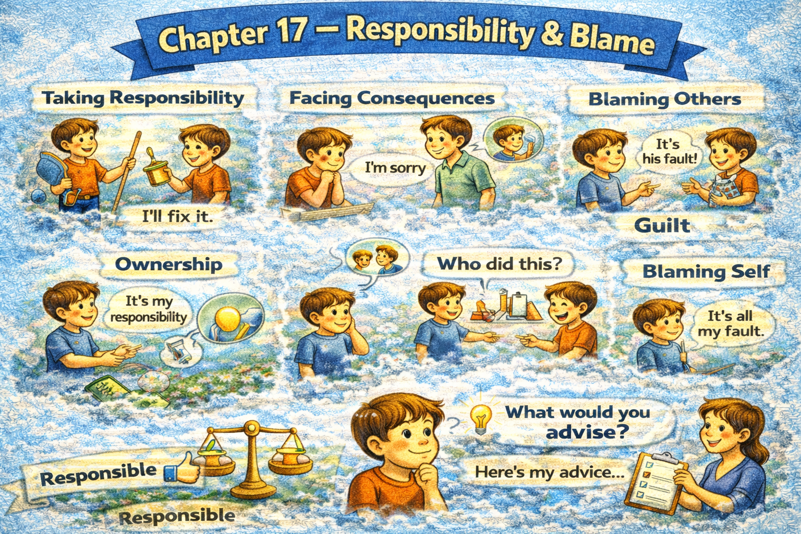

Chapter 17 — Responsibility & Blame

Micro Scene 1 — Taking Responsibility
1️⃣ Scene Text
When an error occurs, I first examine my own role in it.
If my decision contributed to the outcome, I acknowledge it directly.
Taking responsibility strengthens credibility.
I do not shift blame to external factors prematurely.
Even when circumstances were unfavorable, my choices still matter.
Accountability begins with ownership.
If I overlooked a critical detail, I admit it openly.
Responsibility does not imply self-condemnation; it implies awareness.
Owning mistakes accelerates correction.
When responsibility is clear, improvement becomes possible.
Growth requires honest self-assessment.
2️⃣ Core Verb Pool
occur
examine
contribute
acknowledge
shift
begin
overlook
admit
imply
accelerate
become
require
3️⃣ Structure Patterns
When X + verb, Y + verb
If X + verb, Y + verb
X does not imply A; it implies B
Even when X + verb, Y + verb
X begins with + noun
Growth requires + noun
4️⃣ Replace & Extend
Replace ownership:
I acknowledge my role.
→ I accept accountability.
→ I recognize my contribution.
Replace correction:
Owning mistakes accelerates correction.
→ Admission enables repair.
→ Responsibility enables improvement.
Replace awareness:
Responsibility implies awareness.
→ Accountability reflects maturity.
→ Ownership signals integrity.
5️⃣ Spoken Mode
If I made a mistake, I admit it.
Even if the situation was difficult, my choices still mattered.
Taking responsibility helps me fix it faster.
Owning it isn’t weakness — it’s clarity.
🔎 Structural Notes
• “shift blame” signals avoidance behavior.
• “does not imply…, it implies…” reframes guilt.
• Responsibility is framed as strength.
Micro Scene 3 — Misplaced Blame
1️⃣ Scene Text
Blame is misplaced when it ignores underlying causes.
If structural flaws remain unexamined, individuals may be unfairly targeted.
I question whether the assigned responsibility reflects actual influence.
Sometimes visible actors receive blame while systemic factors remain hidden.
Emotional reaction can distort accurate attribution.
If accountability is assigned prematurely, learning is reduced.
Blame often simplifies what is structurally complex.
Misplaced blame protects ego but prevents correction.
When the wrong cause is identified, the wrong solution follows.
Accurate diagnosis precedes fair judgment.
Correct attribution enables meaningful improvement.
2️⃣ Core Verb Pool
misplace
ignore
remain
target
question
reflect
receive
distort
assign
reduce
simplify
protect
prevent
identify
precede
enable
3️⃣ Structure Patterns
X is + past participle when + clause
If X + verb, Y may + verb
Sometimes X…, while Y…
When X + verb, Y + verb
X precedes + noun
X enables + noun
4️⃣ Replace & Extend
Replace distortion:
Emotion distorts attribution.
→ Bias distorts judgment.
→ Pressure distorts evaluation.
Replace premature assignment:
If blame is assigned too early…
→ If conclusions are rushed…
→ If responsibility is assumed…
Replace correction:
Correct attribution enables improvement.
→ Accurate analysis leads to reform.
→ Fair judgment supports growth.
5️⃣ Spoken Mode
Blame can land on the wrong person.
If we don’t look at the system, we might miss the real cause.
Sometimes the visible person gets blamed, but the structure is the issue.
If we diagnose it wrong, we fix the wrong thing.
Fair judgment starts with accurate analysis.
🔎 Structural Notes
• “misplaced” implies misalignment.
• “precede” emphasizes process order.
• Structural vs personal causation distinction.
Micro Scene 4 — Accepting Consequences
1️⃣ Scene Text
Responsibility includes accepting the consequences of one’s actions.
If my decision leads to negative outcomes, I accept the result without deflection.
Accountability requires consistency between choice and consequence.
Avoiding consequences weakens integrity.
When errors occur, repair must follow acknowledgment.
Acceptance does not imply approval; it implies recognition.
If consequences are disproportionate, they should be examined fairly.
However, denial delays resolution.
Facing outcomes directly accelerates recovery.
Consequences clarify impact.
Ownership restores credibility.
2️⃣ Core Verb Pool
include
lead
accept
require
weaken
follow
imply
examine
delay
face
accelerate
restore
3️⃣ Structure Patterns
X includes + verb-ing
If X + verb, Y + verb
X requires + noun
X does not imply A; it implies B
When X + verb, Y must + verb
However,…
4️⃣ Replace & Extend
Replace acceptance:
I accept the consequence.
→ I take responsibility for the outcome.
→ I acknowledge the impact.
Replace denial:
Denial delays resolution.
→ Avoidance prolongs damage.
→ Deflection weakens trust.
Replace repair:
Repair follows acknowledgment.
→ Correction follows admission.
→ Adjustment follows recognition.
5️⃣ Spoken Mode
If my decision caused the problem, I accept it.
Avoiding the consequence only makes it worse.
Owning it helps me move forward faster.
Acceptance isn’t approval — it’s honesty.
🔎 Structural Notes
• “without deflection” signals maturity.
• “does not imply…, it implies…” reframes misconception.
• Consequence is framed as structural outcome.
Micro Scene 5 — Drawing Boundaries of Responsibility
1️⃣ Scene Text
Taking responsibility does not mean accepting every outcome indiscriminately.
I define the boundary between what I control and what I influence.
If external variables dominate the situation, my responsibility has limits.
Accountability applies to decisions, not to uncontrollable events.
When expectations exceed authority, frustration increases.
I clarify the scope of my role before accepting blame.
Responsibility without boundary leads to burnout.
If I assume ownership for everything, objectivity declines.
Healthy accountability requires defined limits.
Recognizing boundaries protects integrity.
Clear limits prevent unfair attribution.
2️⃣ Core Verb Pool
mean
define
control
influence
dominate
apply
exceed
increase
clarify
lead
assume
decline
require
protect
prevent
3️⃣ Structure Patterns
X does not mean + verb-ing
If X + verb, Y + verb
X applies to + noun
When X + verb, Y + verb
If I + verb, Y + verb
X requires + noun
4️⃣ Replace & Extend
Replace control:
I define what I control.
→ I distinguish between influence and authority.
→ I clarify my scope.
Replace overload:
Responsibility without limits leads to burnout.
→ Excessive ownership leads to stress.
→ Undefined roles create confusion.
Replace protection:
Boundaries protect integrity.
→ Clear roles protect fairness.
→ Defined limits protect sustainability.
5️⃣ Spoken Mode
I’m responsible for my decisions — not everything that happens.
If something is outside my control, it’s not fully on me.
Taking on too much responsibility leads to burnout.
Clear boundaries keep things fair.
🔎 Structural Notes
• “apply to” restricts domain.
• “does not mean” prevents overextension.
• Responsibility requires scope definition.
Micro Scene 6 — Releasing Blame
1️⃣ Scene Text
Releasing blame is not the same as ignoring harm.
It is a decision to stop perpetuating resentment.
If blame becomes habitual, it distorts perception.
Holding onto anger prolongs conflict internally.
I separate accountability from emotional fixation.
Forgiveness does not erase consequence; it releases hostility.
When blame dominates thought, objectivity declines.
Letting go restores mental clarity.
If correction has occurred, continued blame becomes unproductive.
Closure requires resolution, not repetition.
Releasing blame creates space for forward movement.
2️⃣ Core Verb Pool
release
ignore
perpetuate
become
distort
hold
prolong
separate
erase
dominate
decline
restore
occur
create
3️⃣ Structure Patterns
X is not the same as + noun
If X + verb, Y + verb
X does not + verb; it + verb
When X + verb, Y + verb
If X + verb, Y becomes + adjective
X creates + noun
4️⃣ Replace & Extend
Replace fixation:
Blame distorts perception.
→ Resentment clouds judgment.
→ Anger narrows perspective.
Replace forgiveness:
Forgiveness does not erase harm; it reduces hostility.
→ Letting go does not excuse behavior; it restores balance.
Replace movement:
Releasing blame creates forward movement.
→ Acceptance enables progress.
→ Resolution restores focus.
5️⃣ Spoken Mode
Letting go of blame doesn’t mean pretending nothing happened.
If I hold onto anger, it only hurts me.
Forgiveness isn’t approval — it’s release.
Once it’s addressed, repeating the blame doesn’t help.
Letting go helps me move forward.
🔎 Structural Notes
• “not the same as” separates misconception.
• Emotional release ≠ factual denial.
• Closure is framed as forward orientation.
🔸 Integration Scene — Responsibility & Blame Structure
Responsibility begins with ownership.
Shared systems distribute influence.
Blame oversimplifies complexity.
Accurate attribution precedes fair judgment.
Acceptance follows consequence.
Boundaries protect integrity.
Misplaced blame distorts correction.
Accountability strengthens credibility.
Releasing blame restores clarity.
Responsibility without limits leads to burnout.
Denial delays improvement.
Ownership enables repair.
Forgiveness reduces hostility.
Clear roles prevent confusion.
Integrity requires accuracy.
Responsibility and blame shape moral structure.
Integration Verb Focus
acknowledge
attribute
accept
clarify
define
protect
release
repair